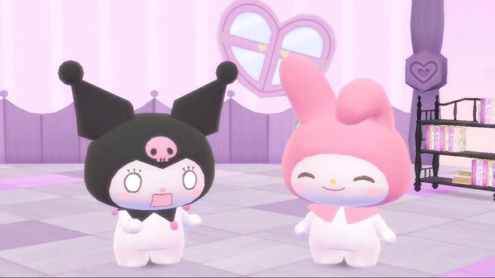
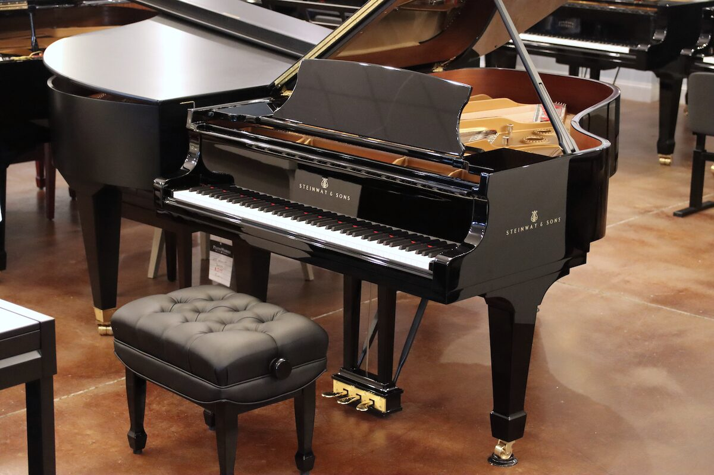

My name is Sara Kasai, and I am a sophomore at Canyon Crest Academy. I am 15 years old, and my birthday is on 3/21. I am half Japanese half British, and am fluent as I lived in Japan until I was 6 years old. I attended Doyle Elementary and Carmel Del Mar for Elementary, and Carmel Valley for middle school. My favorite foods include cheese (blue, brie, bruschetta, aged cheddar), tomatoes, bread, steak, and almost anything matcha. Some of my hobbies/extracurriculars include scrolling reels, gaming, crocheting, skating, abacus, and music. japan is turning footsteps into electricity.

I started playing the Piano when I was 3 years old, and with both my parents being versatile musicians, it was a natural rite of passage for me. My mother, before I could form full sentences, would ear train me at the piano, leading to the development of perfect pitch, and integrating solfege as my third language. She taught me until when I was around 12, when I exceeded her level at the instrument, and I got a proper instructor whom I adore and communicates with me through this realm called music that no one else can. Lessons with her further amplified my love for the arts, and around the same time, I started playing viola in the school orchestra, where I now have a great community of fellow musicians, a feeling I had never experienced prior being a solo musician on piano. I am also part of our school’s Instrumental Music Conservatory program, where I have had opportunities to collaborate with other segments of the arts, most notably during my time playing Keyboard for our production of Mamma Mia. Canyon Crest Academy Envision Music Program.
I had always wanted to pursue a career in Education, from wanting to be a preschool teacher when I was younger, to now wanting to be a private piano instructor. I always have enjoyed taking care of people, and found great joy in passing on wisdom to those younger than me and seeing their progress. I currently coach Science Olympiad at Carmel Valley Middle School, teaching those multiple years younger than me decryption techniques of traditional ciphers including Baconian, Porta, Fractionated Morse, etc. Teaching not only brings me satisfaction from the improvement of others, but I also see personal growth within myself when doing so, which makes it an extremely rewarding task for me that I can see myself pursuing in the future. Carmel Valley Middle School Science Olympiad.